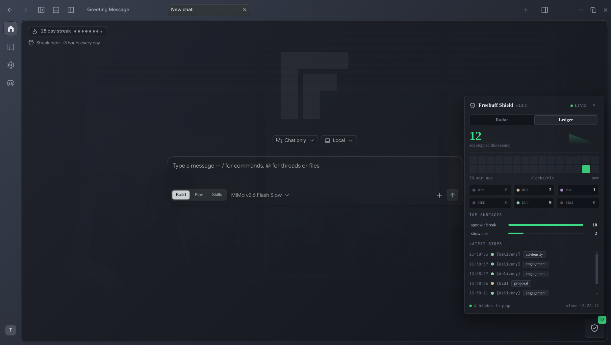

A pluggable extension that strips every ad surface from Freebuff Desktop — network calls cancelled, DOM nuked, telemetry silenced — and ships a live shield dashboard so you can watch them die in real time.

● LIVENetwork interception, DOM annihilation, and telemetry silencing — stacked so that if one layer misses, the next doesn't.
Every ad endpoint — 43 of them — is intercepted and cancelled before a single byte leaves the machine. Inventory, bids, policy, media, delivery, promo: all dead.
Ad containers, sponsor cards, top banners, home takeovers, MCP cards — hidden with aggressive CSS so even cached shells can't flash on screen.
Ad-density and display-ad telemetry never phone home. No impressions, no clicks, no engagement signals. Your usage stays yours.
A real-time dashboard inside Freebuff shows every blocked request, per-stage counts, and recent events. Watch ads die as they're attempted.
An audit tool scrapes every route from each new Freebuff release and exits non-zero on gaps. 0.0.192: 43/43 blocked on day one.
Patch once, launch, done. Rebuild the extension, restart the app — no repatch needed. The dashboard client reloads at activate time.
Install once. The remover patches the Freebuff app, loads on every launch, and stays out of your way.
Clone the repo, run npm install and npm run build. The dist/ is what the app loads.
Run patch-freebuff-app.mjs against the extracted AppImage. It repacks app.asar with the loader baked in.
Start Freebuff. The shield activates, the dashboard goes live, and every ad route is blocked. Check the debug log for "Blocked ad request".
We removed the tax. Keep the product.
No. The patch only injects a require() into main.cjs and repacks app.asar. Freebuff's own updater still works; re-run the patch after a major update if needed.
That shows when running the extracted app (no APPIMAGE env). Launch the AppImage directly for update checks — but that bypasses the patch. Patched-extract is the recommended flow.
No. The remover is fully local. It blocks telemetry endpoints and never phones home itself.
0.0.186 and 0.0.192 are verified live. The audit tool covers any future release automatically.
Yes — PRs welcome. Run npm test and npm run audit before submitting.
Install in five minutes. Watch every ad die in real time.